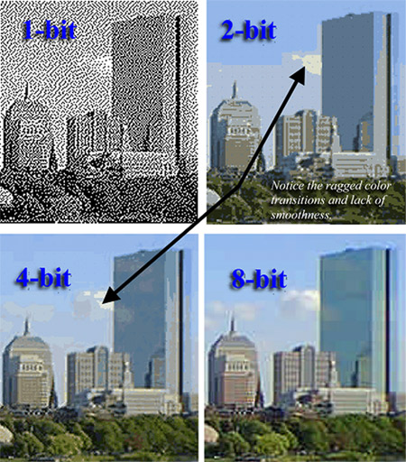

Bit Depth Expansion
INTRODUCTION
Bit-depth is the number of bits used to represent the intensity value of a pixel. Bit-depth expansion is an important phenomenon when a low bit depth-image is displayed on a high bit-depth monitor/projector. The existing methods for bitdepth extension include zero-padding (ZP), multiplication by an ideal gain (MIG), Bit-replica (BR), Inverse halftoning and high dynamic range imaging. Inverse halftoning and high dynamic range imaging requires a collection of low bit-depth images in order to produce high bit-depth Image, but in real time scenarios we have only one low-bit depth image (i.e in high efficiency video coding (HEVC) uses bit-depth expansion). Hence, in this research work our focus is only on those methods which requires only one low bit-depth image in order to produce a high bit-depth image (i.e ZP, MIG and BR methods).
 Image Source : http://www.panamabusinessmachines.com/8-bit-color/
PUBLICATION
Gaurav Mittal, Vinit Jakhetiya, Sunil Prasad Jaiswal, Oscar C. Au, Anil K. Tiwari "Bit-depth expansion using Minimum Risk Based Classification," Visual Communications and Image Processing (VCIP)," 2012 IEEE , vol., no., pp.1,5, 27-30 Nov. 2012, doi: 10.1109/VCIP.2012.6410837 [paper],[Source Code]
REFRENCES
[1]M.S. Fu and Oscar C. Au, “ Hybrid Inverse Halftoning using Adaptive Filtering,” in Proc. of IEEE Int. Sym. on Circuits and Systems, May 1999. [2] Robert Ulichney and Shiufun Cheung, “Bit-Depth Expansion by Bit Replication. Color Imaging:” Device Independent Color (Proceedings of SPIE Volume 3300) San Jose, CA, p. 232-241, 1998. [3] Chun Hung LIU, Oscar C. AU, P. H. W. WONG, and M. C. KUNG ‘Bit-Depth Expansion By Adaptive Filter ,” in . of IEEE Int. Sym. on Circuits and Systems, May 2008. [4] Cheuk-Hong CHENG, Oscar C. AU, Chun-Hung LIU, Ka-Yue YIP, ‘Bit-depth expansion by contour region reconstruction,” in . of IEEE Int. Sym. on Circuits and Systems, May 2009 [5] M.S. Fu, Oscar C. Au, “Fast Adaptive Spatial Varying Filtering for Inverse Halftoning,” in . Of SPIE Conf. On Visual Communication and Image Processing, Jan 2001. [6] Z. Xiong, M. T. Orchard and K. Ramchandran, ‘Wavelet- Based Approach to Inverse Halftoning,” in ”Proc. of IS&T/SPIE Symposium on Electronic Imaging Science and Technology, 1997. [7] R. L. Stevenson ‘Inverse Halftoning via MAP Estimation,” in Transactions on Image Processing, vol. 5, no. 4, pp. 574-583, April 1997